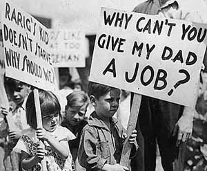

II. Du parlant à la qualité française (1929-1958)
A. Le cinéma classique: Réalisme poétique (1930-1939)
1. Zéro de conduite (1933); Faubourg 36 (2008)
Pour apprécier la transition entre les films muets et les films parlants, regardez The Artist et Singin' in the Rain (films supplémentaires)
Pourquoi est-ce que le cinéma américain a gagné 90% du marché européen pendant cette période? Ce n'est pas seulement la première guerre mondial, mais le système hollywoodien. Selon le site citecinema.com: « En effet, les studios hollywoodiens doivent aussi leur développement à la mise en place d'un type de production élaboré sur des hiérarchies budgétaires. Dans ce système, les acteurs possèdent un contrat, souvent très strict, avec leurs studios, et sont érigés en stars, afin qu'émerge autour d'eux un culte susceptible de fidéliser les spectateurs des salles obscures. Une autre raison pour laquelle Hollywood se développe rapidement est la séparation des genres cinématographiques selon les différentes firmes. Ainsi, la Warner se spécialise dans les films policiers et les comédies musicales, l'Universal dans les mises en scène fantastiques, et la Métro-Goldwyn-Mayer dans les mélodrames historiques.»
Dates et évènements historiques à retenir:
le 6 octobre 1927: sortie de The Jazz Singer (Le Chanteur de Jazz) considéré comme le premier film parlant. "La voix d’Al Jolson était la première à être entendue dans un long métrage ; elle provoqua un tonnerre d’applaudissements."
La réplique « Attendez un peu, vous n'avez encore rien entendu » (Wait a minute, wait a minute. You ain't heard nothin' yet!) a été classée 71e parmi les 100 répliques les plus célèbres du cinéma américain. (source: wikipédia)
|
 |
le 29 octobre 1929: mardi noir du krach à la Bourse de New York; début de la Grande dépression. |
 |
| le 30 janvier 1933: Adolph Hitler nommé Chancelier de l'Allemagne. |
 |
le 3 mai 1936: Élection du Front Populaire, Léon Blum ; le 7 juin 1936: les accords de Matignon: les congés payés, la réduction du temps de travail avec la semaine de quarante heures et l' établissement des conventions collectives.
le 2 septembre 1936: fondation de la Cinémathèque française qui avait pour mission, sous la direction d'Henri Langlois, de conserver les films, de les restaurer, de les montrer et de donner aux générations nouvelles, un enseignement cinématographique. |
 |
Zéro de Conduite de Jean Vigo (1933): Réalisme poétique et l'anarchisme : Doctrine politique ou attitude intellectuelle rejetant l'autorité de l'État et préconisant un individualisme absolu (http://www.cnrtl.fr/definition/anarchisme)
• éléments autobiographiques: père mort/assassiné en prison: Eugène Bonaventure de Vigo dit Almereyda (anagramme de : y a de la merde )-> les mots de son père devient la réplique la plus célèbre du film « Je vous dis Merde! »
• Vigo passe 4 ans à l'internat de Millau sous le pseudonyme de Jean Salles
• Le prix Jean-Vigo est une récompense cinématographique française décernée depuis 1951, attribué à un réalisateur français distingué pour l'indépendance de son esprit et la qualité de sa réalisation. Le prix distingue souvent des jeunes réalisateurs. (http://fr.wikipedia.org/wiki/Prix_Jean-Vigo)
Vocabulaire utile:
l'internat: boarding school
le college: middle school, secondary school
un surveillant/ pion: monitor
la loufoquerie: zaniness
une bagarre de cantine; une bataille de bouffe: food fight
le chahut: bedlam, ruckus, uproar, commotion
une bataille de polochons: a pillow fight
la préfiguration : foreshadowing
Structure (d’après Michael Temple, Zéro de Conduite, Criterion edition commentary):
| 1. La rentrée, le train |
8. La révolte: la fête |
| 2. Le dortoir; 1e zéro de conduite |
7. La révolte: le dortoir |
| 3. La salle de classe; 2e zéro de conduite |
6. La révolte: le réfectoire et la salle de classe |
| 4. La promenade (et le principal) |
5. Les sorties de dimanche (et le principal) |
Répliques essentielles :
« Mais surtout pas d'histoires, pas d'aventures »
« Cette amitié devient excessive. »
« Je vous dis Merde. »
Thèmes (Singerman, 53)
« Au monde des enfants, où règnent à la fois la pureté et le besoin quasi-anarchique de liberté, Vigo oppose le monde des adultes, où tout est défense, injustice, et répression. »
• la révolte, la libération
• le jeu, la créativité
• l'amour ; la peur
Faubourg 36 de Christophe Barratier (2008) Si Zéro de Conduite est une hymne à l'anarchie, Faubourg 36 est une hymne au music-hall et aux films français et américains des années 30. C'est un film qui nous montre l'héritage du cinéma! Même si les grands hommes politiques sont véridiques (Léon Blum, Charles de Gaulle), on ne peut pas trouver le Faubourg 36 sur un plan de Paris. (Un peu de vocabulaire utile pour le film.)
Selon Barratier:
«Le nom de « faubourg » - qui ne renvoie pas à un quartier parisien précis - relève de cette idée. D’ailleurs, dans les films tournés à l’époque du Front populaire, on ne donnait que très rarement des indications précises sur le nom des lieux, des rues ou sur les dates... C’était une des marques du « réalisme poétique » de Carné et Prévert. C’est dans ce sens que j’ai demandé à Jean Rabasse de perturber volontairement la géographie parisienne. De notre faubourg, on peut apercevoir aussi bien la Tour Eiffel que le Sacré Cœur. Ce n’est ni Ménilmontant, ni Montmartre, ni Belleville mais un peu tout cela réuni…
De la même manière, je n’ai pas repris les noms de vrais partis politiques de l’époque, à l’exception évidemment du « Front Populaire ». J’ai inventé le nom du parti d’extrême droite, le S.O.C. [Solidarité Ordre Combat] et la CGT est simplement évoquée par le nom de « Syndicat ». Même si je voulais rendre le contexte de l’époque - dont certaines des préoccupations ne sont pas sans écho avec ce qui se passe aujourd’hui : le pouvoir d’achat, la défense de l’emploi, la xénophobie ambiante ; même si je voulais montrer qu’au moment où les Français goûtaient à de nouvelles libertés, naissaient les ferments de la guerre qui allaient déchirer le monde trois ans plus tard - même si je voulais qu’on sente le drame se profiler sans l’évoquer frontalement, montrer que le 14 juillet 1936 les Français dansaient au bord du volcan - mon propos n’était pas de faire une chronique historique mais une chronique de la vie quotidienne. De la grande Histoire devait naître de petites histoires. Et, enfin, assumer l’imaginaire. Ce n’est pas pour rien que le dernier plan du film - que l’on peut interpréter comme un clin d’œil aux « Enfants du Paradis » - est un rideau qui se ferme... Comme à la fin d’une représentation.»
Pour mieux comprendre l'héritage des scènes musicales, surtout la gala finale, regardez des films de Busby Berkeley sur YouTube! De plus, comparez le S.O.C., parti imaginaire du film avec le Front National, parti actuel d'extrème droite.